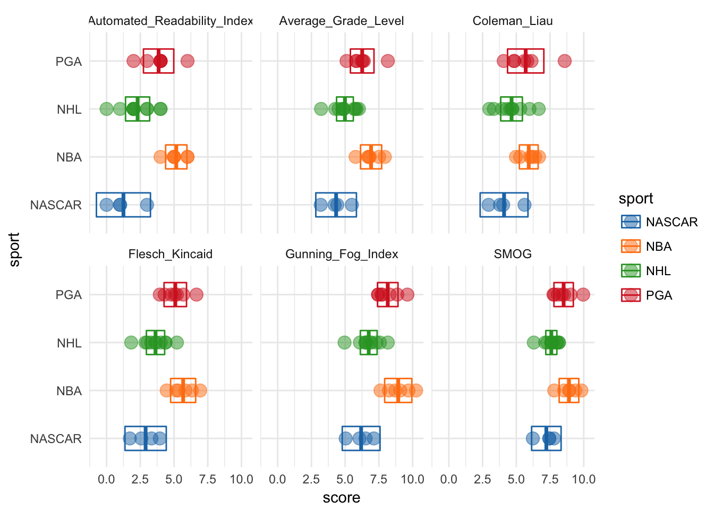
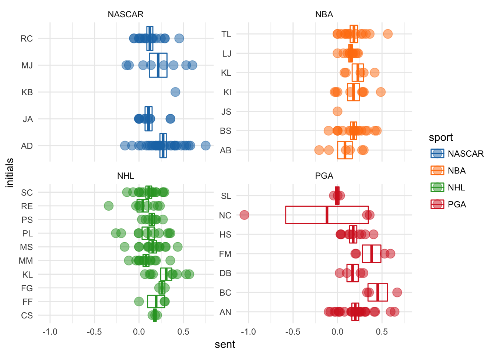
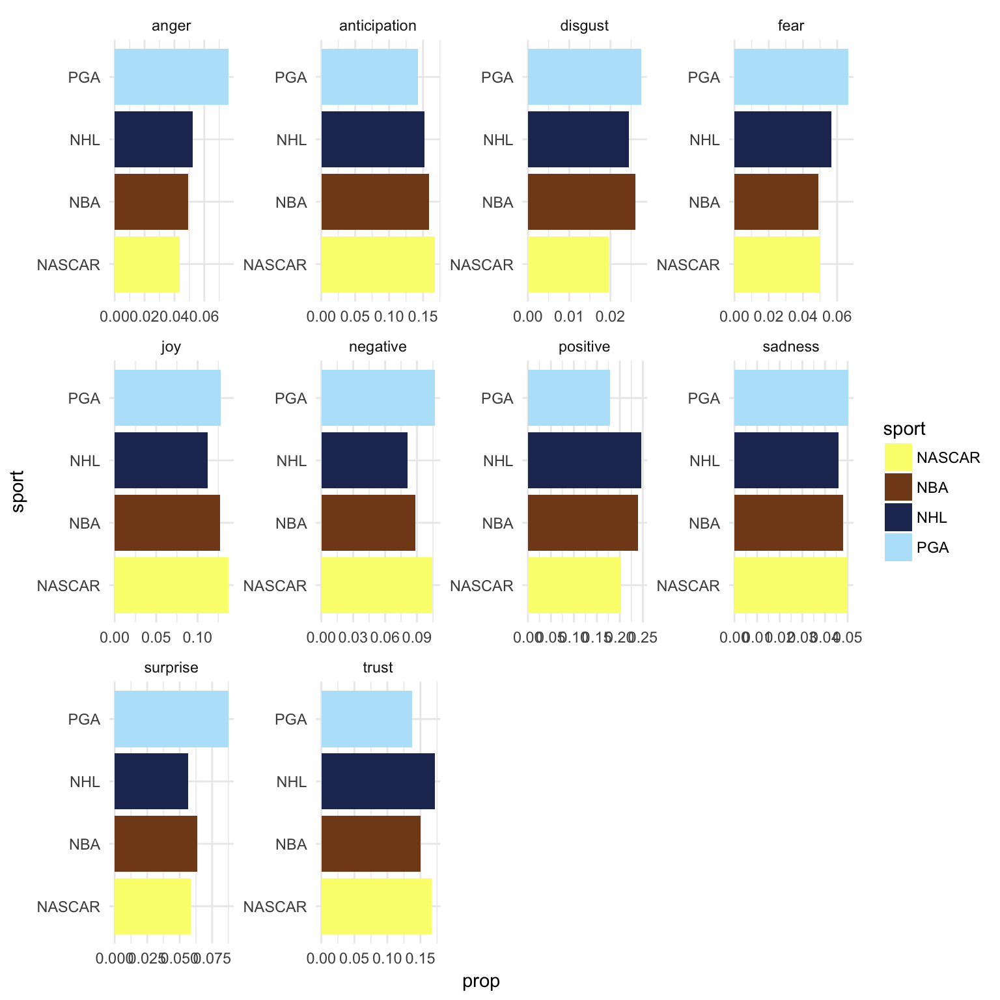

Sports Sentiment
6/1/2017
Intro
With the season finals for the NBA and NHL dominating the sports-cast schedule, I decided to build a quick text analysis of athletes from the NBA, NHL, NASCAR, and PGA. I’ve always thought of hockey players as nicer than normal athletes and wanted to compare them against other sporting professionals. Let’s see how nice they actually are … eh?
This analysis would not be possible with out the tidyverse or the fantastic packages of Tyler Rinker, Julia Silge and David Robinson. Thank you all for your inspiration and contribution to the text analysis tool chest of R.
Scrape
Because of ASAPSports we can access transcripts from a wide-range of professional and amateur athlete interviews. Unfortunately this data is not immediately available in “tidy” format, or even as a .csv, but have no fear our web-scraping bff Selector Gadget and library(rvest) are here!!!!!
library(rvest)
# my favorites
library(stringr) # text-mining
library(tidyverse) # team
library(magrittr) # this is not a %<>%
library(ggsci) # colors
# scrapes from any event link_page URL, like this one:
# http://www.asapsports.com/show_event.php?category=5&date=2017-5-30&title=NHL+STANLEY+CUP+FINAL%3A+PREDATORS+VS+PENGUINS
asap_scraper <- function(link_page) {
pages <- read_html(link_page)
pages %<>% html_nodes("td a") %>% # selector gadget
html_attr("href") %>% # get links out
Filter(function(x) { grepl("id=\\d*", x) }, .) # filter for interviews
# web-scraping is always gross
sport <- map_df(pages, ~ read_html(.) %>%
html_nodes("td") %>%
html_text() %>%
.[14] %>%
gsub(".*\n\t\t", "", .) %>%
str_split("\n") %>%
unlist() %>%
tibble(text = .) %>%
mutate(text = trimws(text),
text = gsub("Q\\..*", "", text),
text = gsub("FastScripts.*", "", text),
speaker = gsub("(^.*): .*", "\\1", text),
text = gsub("^.*: ", "", text),
speaker = ifelse(speaker == text, NA, speaker),
text = ifelse(str_count(speaker, " ") > 3, paste(speaker, text), text),
speaker = ifelse(str_count(speaker, " ") > 3, NA, speaker)) %>%
.[-1,] %>%
filter(!is.na(text)))
sport$speaker %<>% na_filler()
return(sport)
}Yea sorry about that, web scrapping is always a little dirty … eh?
Let’s looks at some recent test cases…
# here is a list of 4 sport's test cases
pages <- list("http://www.asapsports.com/show_event.php?category=5&date=2017-5-30&title=NHL+STANLEY+CUP+FINAL%3A+PREDATORS+VS+PENGUINS",
"http://www.asapsports.com/show_event.php?category=11&date=2017-5-25&title=NBA+EASTERN+CONFERENCE+FINALS%3A+CELTICS+VS+CAVALIERS",
"http://www.asapsports.com/show_event.php?category=4&date=2017-5-28&title=BMW+PGA+CHAMPIONSHIP",
"http://www.asapsports.com/show_event.php?category=3&date=2017-5-28&title=MONSTER+ENERGY+NASCAR+CUP+SERIES%3A+COCA-COLA+600" ) %>%
set_names(c("NHL", "NBA", "PGA", "NASCAR"))
# and ...
sports <- map_df(pages, asap_scraper, .id = "sport")
# tah-dah its a tidy tibble !!!Doesn’t that feel nice and clean? Don’t you worry about that nasty pipe-chain no more:)
Let’s enjoy all of our hard work.
table(sports$speaker, useNA = "always")##
## ALEX NOREN AUSTIN DILLON AVERY BRADLEY
## 25 32 6
## BRAD STEVENS BRIONY CARLYON COLTON SISSONS
## 18 3 3
## DEAN BURMESTER FILIP FORSBERG FRANCESCO MOLINARI
## 4 3 4
## FREDERICK GAUDREAU HENRIK STENSON J.R. SMITH
## 2 10 1
## JUSTIN ALEXANDER KEVIN LOVE KRIS LETANG
## 11 5 9
## KYLE BUSCH KYRIE IRVING LeBRON JAMES
## 1 8 11
## MARTIN TRUEX JR. MATT MURRAY MIKE SULLIVAN
## 8 13 13
## NICOLAS COLSAERTS P.K. SUBBAN PETER LAVIOLETTE
## 3 7 10
## RICHARD CHILDRESS RYAN ELLIS SHANE LOWRY
## 17 8 3
## SIDNEY CROSBY THE MODERATOR TYRONN LUE
## 15 15 14
## <NA>
## 0# get that non-athlete outa' here
sports %<>% filter(speaker != "THE MODERATOR")Read-ability
Tyler Rinker has developed a series of standardized text analysis packages that are available on CRAN. Here we are going to use two of his packages to quantify each athlete’s interview transcript with six readability systems.
library(syllable)
library(readability)
read_scores <- with(sports, readability(text, list(sport, speaker))) %>%
gather(method, score, -(sport:speaker))
ggplot(read_scores, aes(sport, score, color = sport)) +
stat_summary(fun.data = mean_cl_normal, geom = "crossbar", width = .5) +
geom_point(size = 4, alpha = .5) +
facet_wrap(~ method) +
coord_flip() +
scale_color_d3() +
scale_fill_d3()
Those two outliers are: Kyle Bush (NASCAR) and J.R. Smith (NBA). Let’s see why…
filter(sports, speaker %in% c("J.R. SMITH", "KYLE BUSCH"))## # A tibble: 2 x 3
## sport text speaker
## <chr> <chr> <chr>
## 1 NBA He drove the green, I'll tell you that. J.R. SMITH
## 2 NASCAR I'm not surprised about anything. Congratulations. KYLE BUSCH# ahhh just sentences with some high & low syllable words
# get 'em outta here
read_scores %<>% filter(!(speaker %in% c("J.R. SMITH", "KYLE BUSCH")))
# re-investigate
ggplot(read_scores, aes(sport, score, color = sport)) +
stat_summary(fun.data = mean_cl_normal, geom = "crossbar", width = .5) +
geom_point(size = 4, alpha = .5) +
facet_wrap(~ method) +
coord_flip() +
scale_color_d3() +
scale_fill_d3()
After we kick out those outliers, we can see that NBA athletes are consistently rated the highest in terms of reading level. And that NASCAR athletes are consistently the lowest. It also looks like the gaps between NASCAR-NBA and NHL-NBA might be statistically significant. Remember, non-overlapping 95% mean confidence intervals indicate significant difference at p = .05, before multiple test corrections ;)
Sentiment
Okay so we measured readability and it seems like not all athletes speak at similar reading levels. But really we wanted to find out if NHL players are nicer than their peers. So we are going to use another great Tyler Rinker package and the fantastic library(tidytext) from the Stack Overflow data team, Julia Silge and David Robinson.
library(sentimentr)
sents <- with(sports, sentiment_by(text) ) %>%
select(words = word_count,
sent = ave_sentiment) %>%
bind_cols(sports, .)
# make initials to de-clutter axis
sents %<>% mutate(initials = gsub("(^\\D).* (\\D).*", "\\1\\2", speaker))
ggplot(sents,aes(initials, sent, color = sport)) +
stat_summary(fun.data = mean_se, geom = "crossbar") +
geom_point(size = 4, alpha = .5) +
facet_wrap(~ sport, scales = "free_y") +
coord_flip() +
scale_color_d3() +
scale_fill_d3()
Ah man, why is Nicolar Colserats having such a bad day in that one quote?
filter(sents, sent < -0.5) %>%
select(text) %>%
unlist()## text
## "Yeah, yesterday was pretty tough. I didn't play 18 holes into the tough bit. But yeah, I felt that if I played the same way, in a way where it wasn't really blowing that much, you could all of a sudden be a bit more aggressive."That makes sense, it does sound like he had a bad day. Golf can do that to anyone, even professionals.
Let’s drop that statement as an outlier and drop any athletes with just a single sentiment value and re-investigate by sports
sents %<>% filter(sent > -0.5) %>%
group_by(initials) %>%
filter(n() != 1) %>%
ungroup()
library(ggbeeswarm)
ggplot(sents, aes(sport, sent, color = sport)) +
stat_summary(fun.data = mean_se, geom = "crossbar") +
geom_quasirandom(size = 4, alpha = .5) +
coord_flip() +
scale_color_d3() +
scale_fill_d3()
From the looks of this plot it seems like hockey players are the lowest (in this case least positive) sentiment athletes, but this scoring system is based on word score summation, lets try binning words based on associated sentiment.
To do this we will switch package gears.
library(tidytext)
# new scoring system
nrc <- get_sentiments("nrc")
# unnest_tokens to words
words <- unnest_tokens( select(sents, sport:speaker, initials), word, text) %>%
inner_join(nrc) %>%
group_by(sport, speaker, initials) %>%
count(sentiment)## Joining, by = "word"# collapse to sport level and use proportions
sport_words <- group_by(words, sport, sentiment) %>%
summarise(n = sum(n)) %>%
mutate(prop = n / sum(n))
ggplot(sport_words, aes(sentiment, prop, fill = sentiment)) +
geom_col() +
facet_grid(~ sport) +
coord_flip() +
scale_fill_d3()
Well now it looks like all athletes have a similar sentiment distribution with high levels of ‘positive’, ‘anticipation’ and ‘trust’ sentiments across sports. Maybe all of that sports psychology is onto something after all. (Bob Rotella is a golf-genius)
But to truly see whether hockey players are nice, lets do side by side comparisons for each sport, only paneled by sentiments.
ggplot(sport_words, aes(sport, prop, fill = sport)) +
geom_col() +
facet_wrap(~ sentiment, scales = "free") +
coord_flip() +
scale_fill_rickandmorty() # it really exists like that szechuan sauce
Now we can see golfers are the angriest, racers have the most anticipation, basketball players have the least fear and hockey players are the most positive and least negative (at least in this small sample). Maybe hockey players really are nicer than other professional athletes. More tests are in order and more scraping is required to power them, off we go.
Thanks for reading :)
Built with Rmd. Hosted on Github. Maintained by me. Copyright © 2017.